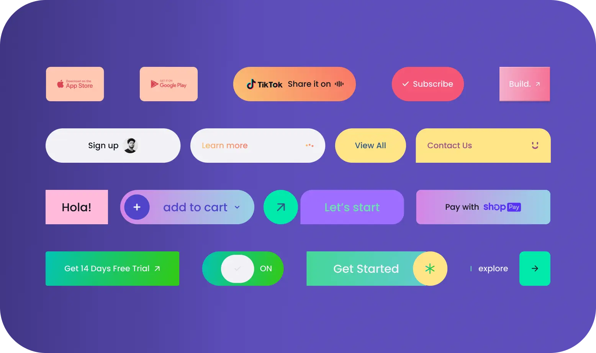
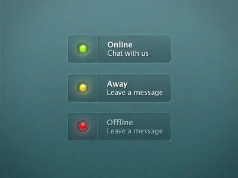
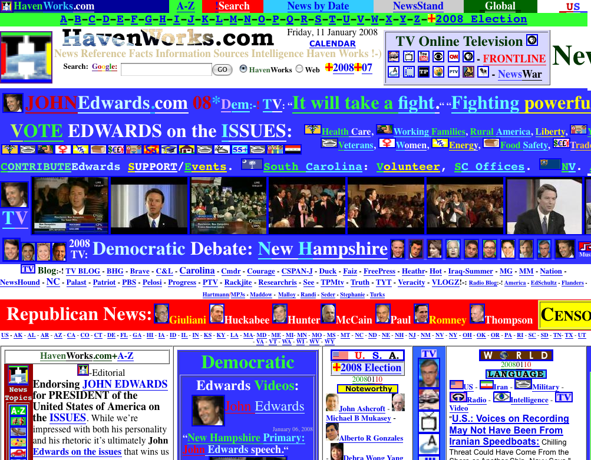

← Voltar para Aulas
### Faculdade Donaduzzi # Desenvolvimento de Interface Gráfica **Aula 04: Design Visual e Aspectos Afetivos** A influência das Cores e Fontes na Experiência do Usuário. --- **Prof. Guilherme de Araujo Gabriel** 1º Semestre
## A Estética é Futilidade? * **Mito:** "Design é só deixar bonito, o importante é o código". * **A realidade:** Usuários são exigentes e esperam experiências ricas e cativantes, não apenas funcionais. * Aplicativos bonitos também podem ter usabilidade terrível se focarem apenas na arte.
## A Estética é Futilidade? <img src="./assets/bicicleta-rodas-quadradas.avif" width="400" style="display: block; margin: 0 auto; alt: Bicicleta com rodas quadradas"> <small style="display: block; color: gray;">Bicycle with Round and Square Wheels Vector Image. (Acessado em 01/03/2026)</small>
## O que são Aspectos Afetivos? * Como as interfaces provocam emoções (conforto, alegria, frustração). * O design tem o poder de deixar o usuário à vontade ou irritado. <img src="./assets/mac-sorridente.jpg" width="400" style="display: block; margin: 0 auto; alt: Mac Sorridente"> <small style="display: block; color: gray;">Apple's 'Happy Mac' face gets a spooky makeover for its 'Scary Fast' event. (Acessado em 01/03/2026)</small>
## O "Efeito Halo" da Estética * Quando a interface é visualmente agradável, o usuário tende a ser mais tolerante com pequenas falhas. * **Exemplo:** Usuários esperam mais tempo por um download se a tela for elegante e atrativa.
## A Cor como Ferramenta **(Proeminência Visual)** * Cores fortes ou contrastantes são ferramentas fundamentais para atrair a atenção do usuário (Visibilidade). * Elas guiam o olhar para a ação principal (Call to Action).
## A Cor como Ferramenta  <small style="display: block; color: gray;">Call to Action: A Guide for Effective Website and 7 CTA Design Tips. (Acessado em 01/03/2026)</small>
## A Cor como Ferramenta <img src="./assets/cta-barbie.png" width="600" style="display: block; margin: 0 auto;"> <small style="display: block; color: gray;">CTA Barbie. (Acessado em 01/03/2026)</small>
## A Cor como Ferramenta <img src="./assets/cta-bluecross.png" width="600" style="display: block; margin: 0 auto;"> <small style="display: block; color: gray;">CTA BlueCross. (Acessado em 01/03/2026)</small>
## Cores Comunicam Status **(Feedback)** * O usuário precisa saber o que está acontecendo sem precisar ler textos longos. * Interfaces expressivas usam cor para dar feedback imediato.  <small style="display: block; color: gray;">Status Colors. (Acessado em 01/03/2026)</small>
## O Lado Sombrio da Cor **(Frustração)** * O excesso de cores satura o usuário. * Interfaces com efeitos de cor espalhafatosos, confusos ou "muito autoritários" são grandes causas de frustração.
## O Lado Sombrio da Cor  <small style="display: block; color: gray;">Worst Website. (Acessado em 01/03/2026)</small>
## O Poder Oculto das Fontes * Diferentes estilos e tamanhos de letras atraem a atenção e criam hierarquia. * A fonte escolhida muda a "voz" e o tom do sistema. * *Exemplos:* Cômico, profissional, infantil.
## O Estudo Clássico de Aaron Marcus * Aaron Marcus provou que a fonte muda o público-alvo. * Duas caixas de diálogo idênticas em funcionalidade, mas com fontes diferentes, agradaram a públicos completamente distintos (uma mais corporativa, outra mais clássica). <img src="./assets/aaron-marcus.png" width="600" style="display: block; margin: 0 auto;">
## O Contexto Dita a Escolha Visual * Você não usaria a fonte Comic Sans em um sistema bancário de investimentos. * Se o app for um jogo infantil para economizar dinheiro, cores primárias e fontes lúdicas são o objetivo correto da experiência do usuário.
## Comparação Prática **(O Bom vs. O Mau)** <div style="display: flex; justify-content: space-around; align-items: center;"> <div style="width: 45%;"> <img src="./assets/bad-design.png" width="100%"> <small style="display: block; text-align: center;">Site poluído: excesso de cores e fontes brigando por atenção.</small> </div> <div style="width: 45%;"> <img src="./assets/good-design.png" width="100%"> <small style="display: block; text-align: center;">App minimalista: elegante, cor de destaque e fonte limpa.</small> </div> </div> <br> > **"Como vocês se sentem olhando para a imagem 1? E para a imagem 2?"**
## Quem é o seu usuário? **(O Mito do Padrão)** * **Não existe um "usuário padrão".** * O design deve incluir o maior número de pessoas, independentemente de limitações físicas, visuais, auditivas ou cognitivas. * Acessibilidade não é um "favor", é um requisito fundamental de qualidade e impacto social. <img src="./assets/user-profiles.png" width="600" style="display: block; margin: 0 auto;">
## O Perigo de Depender Apenas da Cor * A cor nunca deve ser o único meio de transmitir uma informação crítica. * Se um erro for apenas uma borda vermelha, um usuário daltônico não o verá. * **Regra de Ouro:** Combine cor + forma/ícone. <img src="./assets/color-blindness-form.png" width="600" style="display: block; margin: 0 auto;">
## Flexibilidade e Inclusão Visual * Fontes pequenas ou finas demais excluem usuários com baixa visão ou idosos. * Permitir a ampliação do texto sem quebrar o layout da tela é essencial. * Garantir **alto contraste** entre a fonte e o fundo (evitar cinza claro no fundo branco). <img src="./assets/contrast-examples.png" width="500" style="display: block; margin: 0 auto;">
## Por que os usuários "surtam"? * Segundo Yvonne Rogers, interfaces mal projetadas ou descuidadas são a maior causa de raiva e abandono. * Quando a aparência apresenta efeitos de cor confusos, espalhafatosos ou muito autoritários. * **A estética ruim destrói a confiança no sistema.**
## Poluição Visual e Sobrecarga * Websites sobrecarregados de textos e gráficos. * Dificuldade de encontrar informações básicas em meio ao caos. * O usuário se sente perdido e sem o controle da situação. <img src="./assets/worst-website.png" width="600" style="display: block; margin: 0 auto;">
## Estímulos Invasivos * Uso copioso de efeitos sonoros desnecessários ao clicar em botões. * Animações contínuas, como banners de anúncios que causam muita distração. * Designs infantis ou agentes virtuais que ficam pulando na tela interrompendo a leitura. <br> > **"Quem aqui já fechou um site imediatamente porque um vídeo com áudio alto começou a tocar sozinho?"**
## A Cura: Simplicidade e Elegância * A interface deve ser facilmente percebida e estar de acordo com os princípios do design gráfico. * **Se não for essencial para a tarefa daquele momento, remova da tela.**
## Revelação Progressiva **(O Truque Mágico)** * Conceito de Travis Lowdermilk para reduzir a carga cognitiva. * Oculte ou deixe em cinza (desabilitado) opções que não são possíveis no momento. * O usuário só vê o que ele precisa e o que ele pode fazer. <img src="./assets/progressive-disclosure.png" width="600" style="display: block; margin: 0 auto;">
## O Bom Design Respeita o Usuário **(Resumo)** * Uma interface bonita sem acessibilidade é inútil. * Cores comunicam, mas não devem atuar sozinhas. * Poluição e excesso de informações geram frustração. * Use a revelação progressiva para limpar a tela.
## TDE - Prática **A Caça à Poluição e à Exclusão** * **Missão:** Escolher um site público (prefeitura, serviços locais) ou e-commerce antigo. * **Ação:** Fazer prints e uma auditoria de acessibilidade. * **Perguntas a responder:** * O contraste está bom? Dá para ler a fonte sem esforço? * O site causa sobrecarga visual (é poluído)? * Uma pessoa daltônica conseguiria usar? * **Entrega:** Documento com os prints e sugestões breves de como "limpar" e tornar a interface mais inclusiva.
## Referências <div style="font-size: 0.5em; text-align: left;"> ### Imagens e Mídias * **[1] Exemplo de estética sem funcionalidade:** [Bicycle with Round and Square Wheels Vector Image](https://www.vectorstock.com/royalty-free-vector/bicycle-with-round-and-square-wheels-vector-6872096). Acesso em: 01 Mar. 2026. * **[2] Exemplo de aspectos afetivos Mac Sorridente:** [Apple's 'Happy Mac' face gets a spooky makeover for its 'Scary Fast' event](https://forums.appleinsider.com/discussion/234060/apples-happy-mac-face-gets-a-spooky-makeover-for-its-scary-fast-event). Acesso em: 01 Mar. 2026. * **[3] Exemplo de CTA:** [Call to Action: A Guide for Effective Website and 7 CTA Design Tips](https://www.align.vn/blog/7-call-to-action-design-tips/). Acesso em: 01 Mar. 2026. * **[4] Exemplos de CTA tradução dos infográficos do site "Color Psychology: How To Use it in Marketing and Branding":** [Color Psychology: How To Use it in Marketing and Branding](https://blog.hubspot.com/the-hustle/psychology-of-color). Acesso em: 01 Mar. 2026. * **[5] Cores comunicando status:** [Status Indicator](https://dribbble.com/search/status-indicator). Acesso em: 01 Mar. 2026. ### Bibliografia Consultada * **LOWDERMILK, Travis.** *Design centrado no usuário: um guia para o desenvolvimento de aplicativos amigáveis.* São Paulo: Novatec Editora Ltda, 2013. 182 p. * **ROGERS, Yvonne.** *Design de interação: além da interação humano-computador.* 3. ed. Porto Alegre: Bookman, 2013. 585 p. * **SOMMERVILLE, Ian.** *Engenharia de software.* 10. ed. São Paulo: Pearson Education do Brasil, 2018. 756 p. </div> <small>Apresentado por: Guilherme de Araujo Gabriel</small>